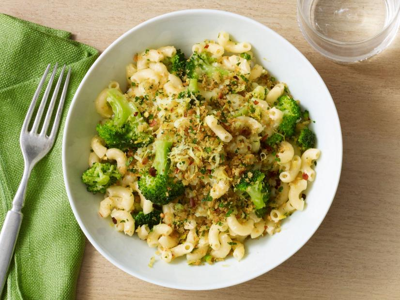

Elbow Macaroni with Crispy Breadcrumbs and Broccoli

Description
Even the pickiest children will like this pasta!
Ingredients
- Kosher salt
- 6 tbs extra-virgin olive oil, plus more for drizzling
- 1/2 cup panko breadcrumbs
- Finely grated zest of 1 lemon
- 1 cup grated parmesan cheese
- 12 oz elbow macaroni
- 1 head broccoli, cut into small florets (about 4 cups)
- 1 clove garlic, finely chopped
- 1/4 tsp red pepper flakes
- 1 cup vegetable stock
Steps
- Bring a large pot of salted water to a boil. Meanwhile, in a large skillet over medium heat, add 2 tablespoons olive oil. Add the breadcrumbs and toast, stirring constantly, until they are crisp and golden, 4 to 5 minutes, taking care not to let them burn. Scrape into a small bowl and toss with the lemon zest and parsley and then season with salt.
- Add the pasta to the boiling water and cook according to the package directions until al dente while you make the sauce. Wipe out the skillet used to toast the breadcrumbs and return it to medium-high heat. Add the remaining 4 tablespoons olive oil and, when the oil is hot, add the broccoli and toss to coat. Saute until it turns bright green, 2 to 3 minutes, then add the garlic and pepper flakes. Cook until the garlic is fragrant, about 1 minute, then pour in the stock. Simmer until the broccoli is tender, 5 to 6 minutes.
- When the pasta is done, scoop it out of the water with a spider or a small strainer and add directly to the sauce, reserving the pasta water. Simmer the pasta with the sauce just to blend the flavors, 1 to 2 more minutes, then drizzle with a tablespoon or so of olive oil and toss again.
- If the sauce seems dry, add up to 1/2 cup pasta water. Off the heat, stir in the cheese. Serve in warmed bowls and sprinkle with the breadcrumb mixture.